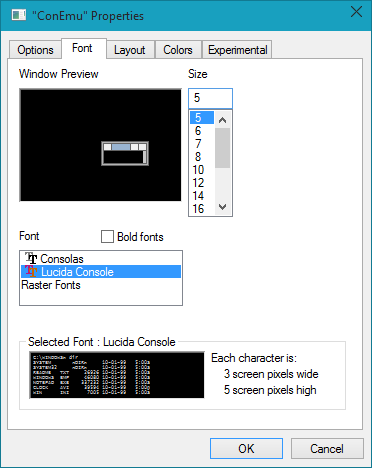
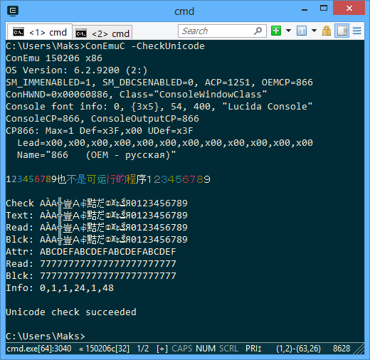
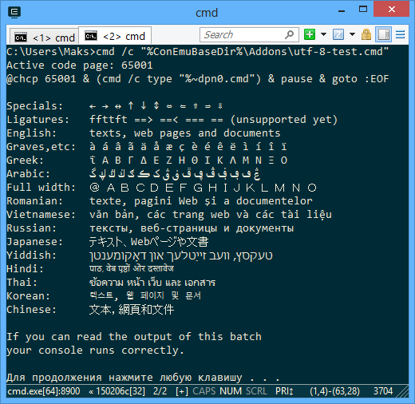

ConEmu is a unicode application. That means if your console application (cmd, java, perl, powershell, bash and so on) can write unicode characters to the console, ConEmu will show them.
UTF-8
On Windows, unlike Unix, the console itself is not a stream of ‘bytes’ but a spreadsheet of cells, each of which contains an UTF-16 character and a color attribute.
That means if your application produces output using single-byte or multi-byte character sets (which are ANSI, OEM, UTF-8 and many others) the Windows converts that output to UTF-16 automatically regarding active codepage selected in your console (use "chcp" command to check it).
If you want to work with UTF-8 encoding you have to select UTF-8 as active console codepage. Just use "chcp 65001" command to do that. You may call this command from your shell prompt or run it before shell in a ConEmu task content. Of course your application must be able to output data using UTF-8. Refer to your application manual.
chcp 65001 & cmd
On-the-fly conversion
Sometimes you may observe a broken output if your application uses wrong codepage. That is, for example, if you run "git app -p" and your sources have some national encoding (Russian 1251 codepage for example). Perl prints chunks using codepage 1252 and I have not find a simple way to force it using proper codepage. That why the environment variable ConEmuCpCvt was created. Run the following to fix broken output.
set ConEmuCpCvt=perl.exe:1252:1251 git app -p
Font charset
There is a ‘Font charset’ option in the font settings. This setting is not related to UTF-8 or Unicode itself, it just tells to Windows what font it must choose if there are several fonts available in one family. But you may play with this option and see how the result is changed.
Troubleshooting
If you observe some non-ascii characters are not displayed correctly you may check the following:
Check if the font used in ConEmu has proper glyphs
What font you are using
Main settings page has two section: ‘Main console font’ and ‘Change pseudographics font’.
‘Pseudographics font’ is used for some unicode ranges generally containing frames and some pseudographics symbols. For example: = ¦ - г г ¬ ¬ ¬ L L L - - - ¦ ¦. The default range is U2013..U25C4. You may change it within ConEmuXml:
<value name="FixFarBordersRanges" type="string" data="2013-25C4;"/>
Actually, you may untick the ‘Change pseudographics font’ if you do not need it.
‘Main console’ font is used for all other symbols.
There is ‘Font charset’ there. Usually it must contain ‘Default’ or ‘ANSI’. Read ‘Font charset’ section above.
One more strange thing: the option ‘Treat font height as device units’ reflects on created font too.
Check font glyphs
Check if the font has proper glyphs: run from Win+R the charmap.exe tool and examine your font.
Check if RealConsole is capable to accept unicode
Press ‘Ctrl+Win+Alt+Space’ to reveal RealConsole and check its contents. Actually, it may fails for hieroglyphs and some others unicode ranges.
Anyway, the critical thing is that RealConsole has TrueType font selected in the console properties.

This font may be configured from ConEmu's Features setting page -> button ‘...’ on the right of ‘Show real console’

Check if your console application is Unicode-aware
What shell or application is responsible for your broken output? In most cases you will see the active application exe name in the StatusBar. If it does not support unicode output you need to check for updates of this application. For example, MSYS1 is not unicode-aware. May be your application has some configuration where you may choose proper encoding.
At last, in some cases the following trick may help: set console codepage to UTF-8 before running your shell or application. For example, put the following in the startup task.
chcp 65001 & cmd
Also ConEmu provide some tests you may run
CheckUnicode test
ConEmuC -CheckUnicode

UTF-8 test
cmd /c "%ConEmuBaseDir%\Addons\utf-8-test.cmd"
